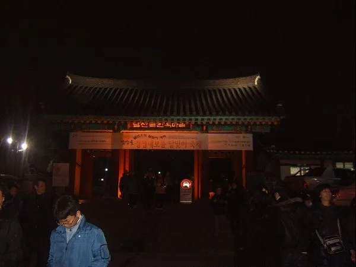
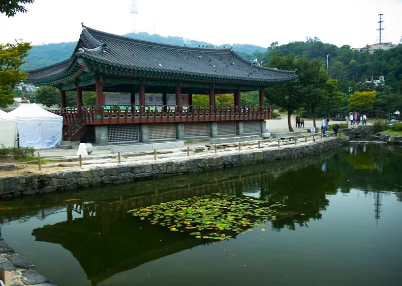
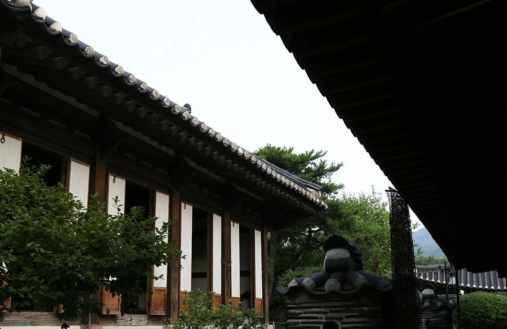
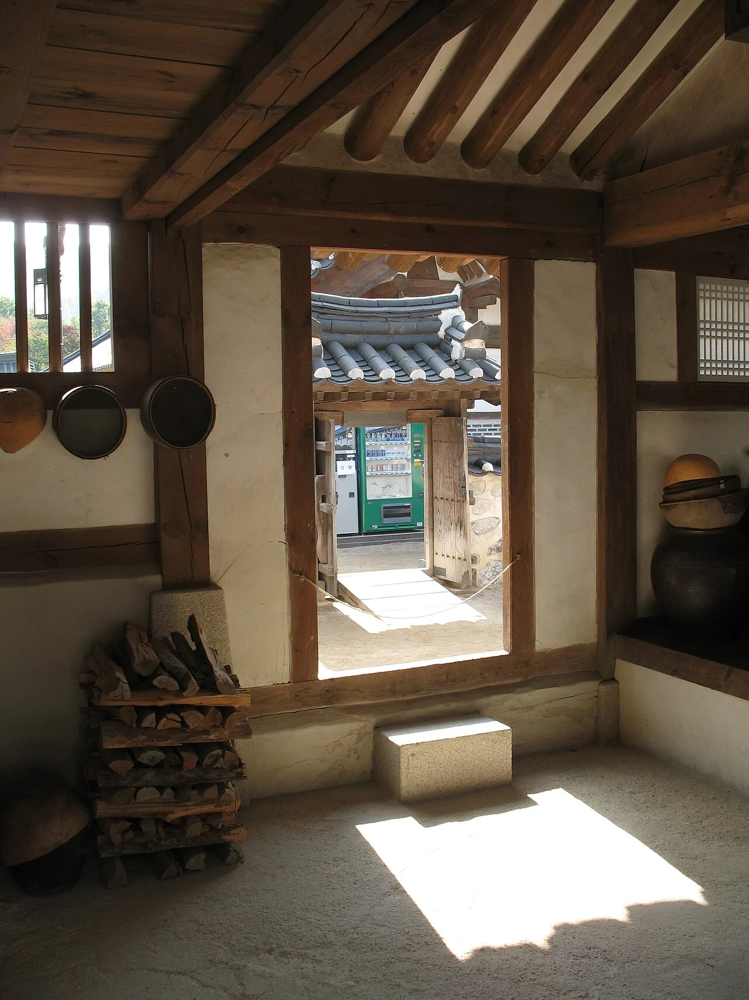
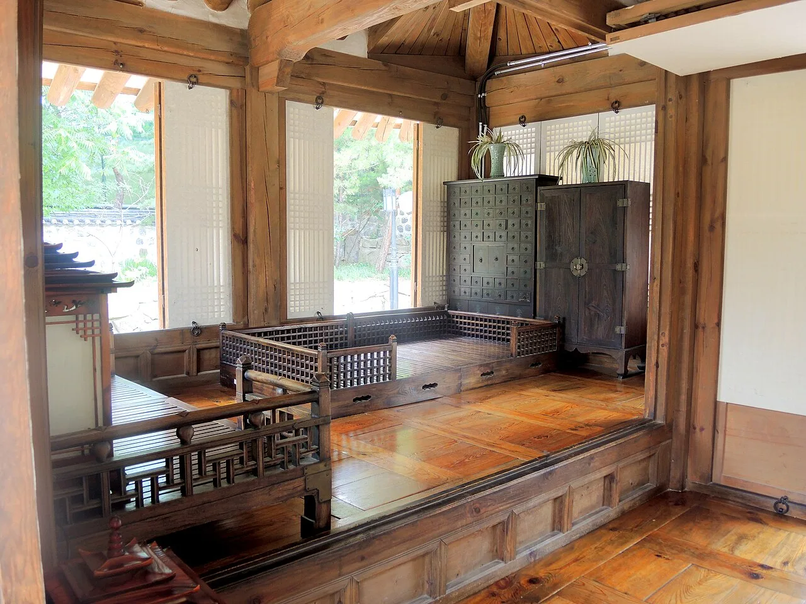
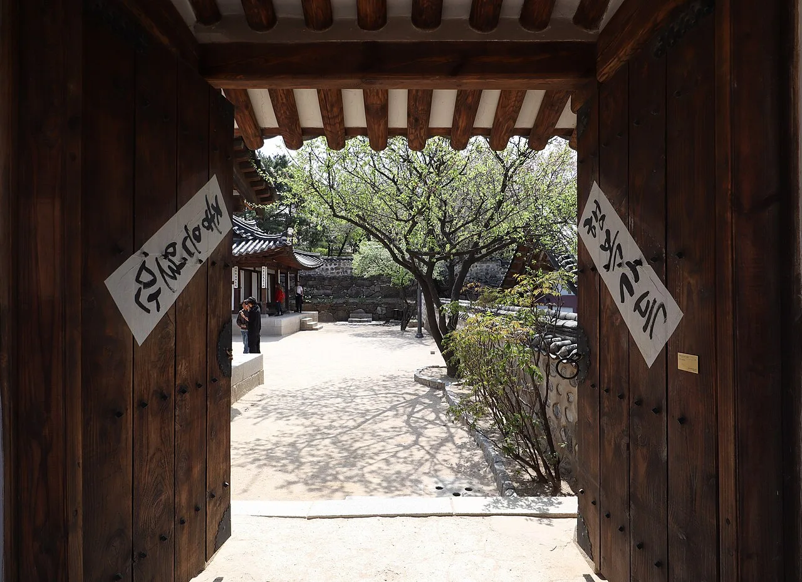
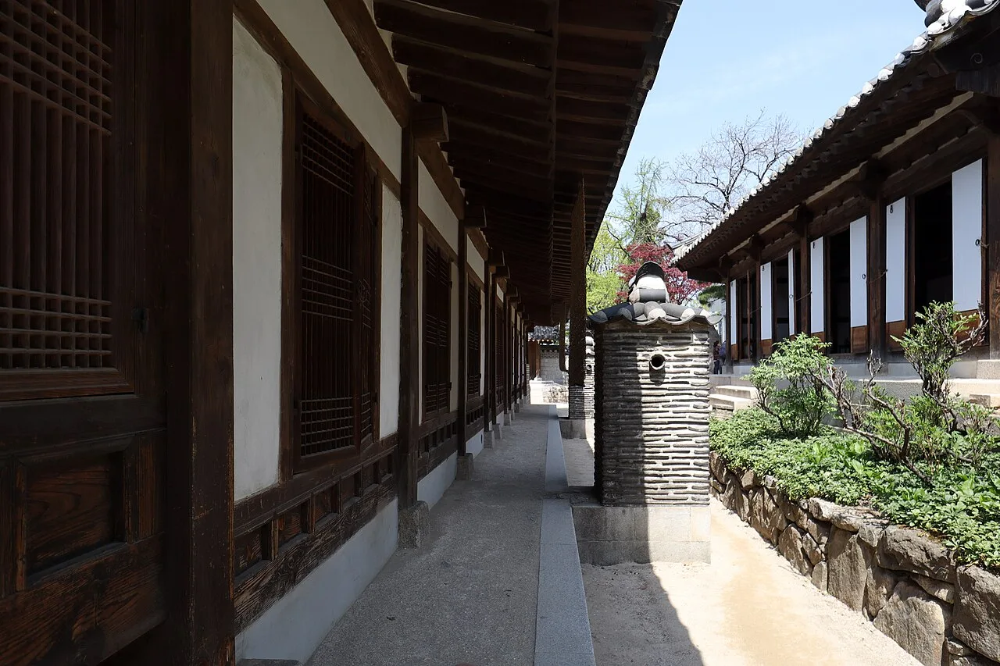

▲ 남산골한옥마을 정문. 축제 기간 야간에는 조명이 밝혀져 낮과 다른 분위기를 낸다 ⓒ Wikimedia Commons
서울 중구 남산골한옥마을이 추석 연휴 딱 3일간, '2026 남산골 추석축제 <남산달빛마당>'을 연다. 기간은 2026년 9월 25일(금)부터 27일(일)까지이며, 운영 시간은 오전 10시부터 오후 8시까지다. 한가위 보름달 아래 사람들이 모이는 '마당'을 콘셉트로, 줄타기·판소리 같은 전통 공연과 누비공예·한복·댕기머리 체험이 날짜별로 촘촘히 짜여 있다. 이 기사는 축제 프로그램부터 남산골한옥마을 기본 정보, 같은 연휴 기간 무료로 열리는 4대궁·종묘까지 방문 순서대로 정리했다.
1. '남산달빛마당' 프로그램 — 줄타기·판소리부터 누비공예까지

▲ 남산골한옥마을 연못가의 정자. 뒤로 N서울타워가 보여 도심 속 한옥마을임을 실감케 한다 ⓒ Wikimedia Commons
축제는 달빛 풍류·단장·의례·공방·음식·공간 등 6개 주제를 중심으로 날짜별 특별 프로그램과 상설 체험으로 구성된다. 25~26일 이틀간은 '제4회 월드판소리페스티벌'이 열리고, 25일 낮 12시에는 민씨 가옥에서 차례상에 오르는 음식과 상차림, 제례 예절을 소개하는 '추석 차례상 이야기'가 진행된다. 같은 날 오후 7시 30분에는 천우각에서 '달빛 국악 버스킹'이 열리는데, 선착순으로 LED 청사초롱 100개를 나눠준다.
축제가 가장 집중되는 날은 마지막 날인 27일이다. 오후 1시 천우각에서 '전통 줄타기: 판줄' 공연이, 오후 3시에는 아리랑을 주제로 한 '연희의 새물결(FIT)' 공연이 이어진다. 체험 프로그램으로는 민씨 가옥에서 오후 1시부터 8시까지 한복·전통 메이크업·헤어(댕기머리) 체험이 상시 운영되고, 전통공예관에서는 오후 2시와 4시 두 차례 '명인과 함께하는 누비 공예' 체험이 열린다. 관람은 전부 무료이며, 한복 체험 등 일부 프로그램만 유료로 진행된다. 정확한 시간표와 사전 예약 필요 여부는 방문 전 공식 홈페이지에서 다시 확인하는 것이 안전하다.
남산골한옥마을 공식 홈페이지에서 축제 일정 확인 가능2. 남산골한옥마을은 어떤 곳 — 한옥 5채, 국악당, 시분수 광장

▲ 남산골한옥마을 전통 가옥의 기와지붕. 서울 곳곳에 흩어져 있던 한옥을 옮겨와 복원했다 ⓒ Wikimedia Commons
남산골한옥마을은 약 7만 9,934㎡ 규모 부지에 조선시대 한옥 5채와 전통정원, 시분수(타임캡슐) 광장이 어우러진 복합 문화공간이다. 남산 기슭에 있던 옛 정취를 되살리고자 1989년부터 복원 작업을 시작해 1998년 개관했다. 다섯 채의 한옥은 관훈동 민씨 가옥, 제기동 해풍부원군 윤택영 재실, 옥인동 윤씨 가옥, 삼각동 도편수 이승업 가옥, 삼청동 오위장 김춘영 가옥으로, 모두 서울 시내에 흩어져 있던 것을 이전·복원한 것이다. 살았던 사람의 신분과 직책에 따라 집의 규모와 구조가 달라, 다섯 채를 둘러보는 것만으로도 조선시대 계층별 주거 문화를 비교해 볼 수 있다.

▲ 가옥 내부에 재현된 살림 공간. 장작더미와 항아리 등 당시 생활상을 엿볼 수 있다 ⓒ Wikimedia Commons
한옥 구역 외에도 조선시대 정취를 살린 전통정원과 공연이 열리는 정자 천우각, 국악 공연장인 서울남산국악당, 1994년 서울 정도 600년을 기념해 조성한 서울천년타임캡슐광장이 자리한다. 전통정원은 24시간 개방돼 있어 야간에도 산책이 가능하다. 지하철 3·4호선 충무로역과 도보 5분 거리로 접근성이 좋아 평소에도 외국인 관광객과 시민들이 즐겨 찾는 곳이다.

▲ 가옥 내부에 재현된 사랑채. 반닫이 등 전통 가구가 그대로 배치돼 있다 ⓒ Wikimedia Commons
3. 같은 연휴, 4대궁·종묘도 무료 — 하루 코스로 묶기
공교롭게도 이번 추석 연휴에는 남산골한옥마을뿐 아니라 서울 시내 주요 고궁도 무료로 개방된다. 문화체육관광부·국가유산청 발표에 따르면 9월 24일(목)부터 27일(일)까지 나흘간 경복궁·창덕궁·덕수궁·창경궁 등 4대 궁궐과 종묘, 전국 조선왕릉의 입장료가 전액 면제된다. 평소 사전 예약이 필요했던 종묘도 이 기간에는 예약 없이 자유 관람으로 전환된다. 다만 창덕궁 후원 한 곳만 이번 무료 개방 대상에서 빠진다. 경복궁에서는 오전 10시·오후 2시 수문장 교대의식, 오전 11시·오후 1시 파수의식, 오후 3시 순라의식도 함께 볼 수 있다.
남산골한옥마을에서 4대궁까지는 지하철로 20~30분 안팎이면 이동할 수 있어, 오전에는 고궁을 둘러보고 오후~저녁에는 남산골한옥마을에서 축제를 즐기는 하루 코스를 짜기 좋다. 특히 27일은 축제 공연이 가장 많이 몰리는 날이자 무료 개방 마지막 날이기도 해, 이날 하루를 온전히 서울 도심 나들이에 쓰는 방문객이 많을 것으로 보인다.
4대궁·종묘 추석 무료 개방 안내에서 자세히 확인 가능4. 가는 법·주차 — 지하철이 압도적으로 편하다

▲ 가옥 대문 너머로 보이는 안뜰. 봄가을이면 마당의 나무와 어우러진 풍경이 방문객들의 발길을 잡는다 ⓒ Wikimedia Commons
남산골한옥마을은 지하철 3·4호선 충무로역 3·4번 출구에서 도보 2~5분 거리로, 대중교통 접근성이 매우 좋다. 버스를 이용한다면 퇴계로3가·한옥마을 정류장에서 7011, 104, 105, 140, 421, 463, 507, 604번과 남산순환버스(02·05번), 남산 투어버스(90s)를 탈 수 있다. 자가용을 이용할 경우 인근 공영주차장 요금은 5분당 250원(시간당 약 3,000원) 수준이며, 오후 8시부터 다음 날 오전 9시까지는 무료다. 다만 추석 연휴 기간에는 방문객이 몰려 주차 공간이 금방 찰 수 있는 만큼, 지하철 이용을 우선 권장한다.
| 항목 | 내용 |
|---|---|
| 축제 기간 | 2026년 9월 25일(금)~27일(일), 오전 10시~오후 8시 |
| 입장료 | 무료(일부 체험 프로그램은 유료) |
| 평상시 운영시간 | 화~일 09:00~21:00(전통정원 24시간 개방), 매주 월요일 정기휴관 |
| 위치 | 서울 중구 퇴계로34길 28 |
| 대중교통 | 지하철 3·4호선 충무로역 3·4번 출구, 도보 2~5분 |
| 주차 | 인근 공영주차장 5분당 250원, 20:00~익일 09:00 무료 |
| 문의 | 전통가옥 운영사무실 02-6358-5533 |
5. 방문 팁 — 이렇게 준비하면 더 편하다

▲ 한옥 건물을 따라 이어지는 회랑. 가옥과 가옥 사이를 걸어서 둘러볼 수 있다 ⓒ Wikimedia Commons
축제 기간 마지막 날인 27일에 공연과 체험이 몰려 있는 만큼, 이날 방문한다면 오후 1시 줄타기 공연 시작 전에 도착해 자리를 잡는 편이 좋다. 한복·헤어 체험은 오후 1시부터 8시까지 상시 운영되므로 공연 사이 시간을 활용해 참여하면 동선 낭비를 줄일 수 있다. 야간에는 정원 조명이 더해져 낮과 다른 분위기를 내는 만큼, 해 질 무렵부터 저녁까지 머무는 일정을 짜는 것도 방법이다. 추석 연휴 특성상 인파가 몰릴 수 있어 유모차나 짐이 많다면 지하철 이용이 훨씬 수월하다. 4대궁 무료 개방과 겹치는 24~27일에는 경복궁 등 인근 고궁도 함께 붐빌 가능성이 높으니, 오전 이동은 여유 있게 잡는 것이 좋다.
✅ 남산골한옥마을 '남산달빛마당', 가기 전 체크리스트
· 축제 기간 2026년 9월 25일(금)~27일(일), 오전 10시~오후 8시, 관람 무료
· 25~26일 월드판소리페스티벌, 27일 오후 1시 전통 줄타기·오후 3시 아리랑 주제 공연
· 27일 민씨 가옥 한복·헤어 체험(13~20시), 전통공예관 누비공예 체험(14시·16시)
· 남산골한옥마을은 1998년 개관, 조선시대 한옥 5채·전통정원·천우각·서울남산국악당으로 구성
· 같은 연휴 9/24~27 경복궁 등 4대궁·종묘·조선왕릉도 무료 개방(창덕궁 후원 제외)
· 지하철 3·4호선 충무로역 3·4번 출구 도보 2~5분, 평시 월요일 정기휴관
· 정확한 시간표·예약 여부는 방문 전 공식 홈페이지 재확인 필요